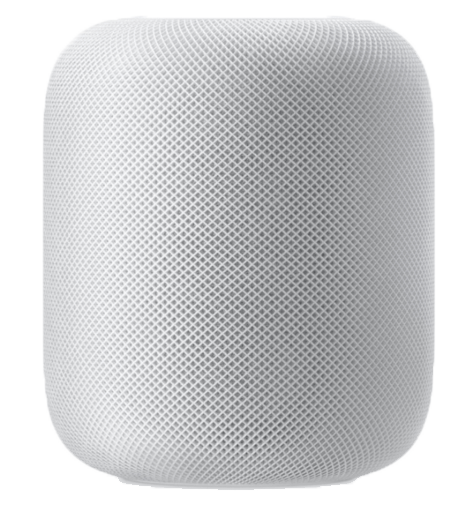
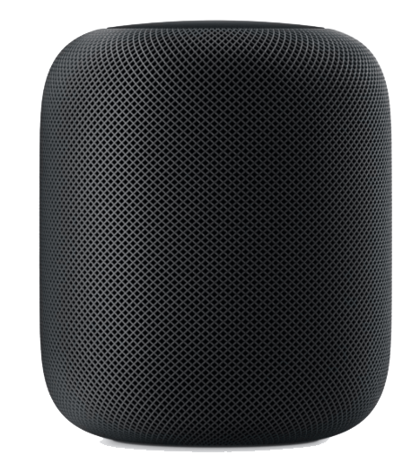

Finition


Dimensions et poids
Dimensions :
- 172 mm de hauteur
- 142 mm de diamètre
Technologie audio
- Boomer longue portée avec amplificateur spécifique
- Sept tweeters à pavillon, chacun ayant son propre amplificateur spécifique
- Ensemble de six micros pour s’adresser de loin à Siri
- Micro interne de calibration des fréquences basses pour une correction automatique des graves
- Formation de faisceaux pour le son direct et ambiant
- Traitement dynamique transparent digne d’un studio professionnel
- Compatible avec l’appairage stéréo
Source audio
- Apple Music
- Sept tweeters à pavillon, chacun ayant son propre amplificateur spécifique
- Achats de musique sur iTunes
- Radio Beats 1 en direct
- Épisodes live de Beats 1 à la demande
- Podcasts Apple
- Diffusion d’autres contenus de votre iPhone, iPad, iPod touch, Apple TV ou Mac sur le HomePod via AirPlay
Format audio
- HE‑AAC (V1), AAC (16 à 320 kbit/s), AAC protégé (iTunes Store), MP3
- (16 à 320 kbit/s), MP3 VBR, Apple Lossless, AIFF, WAV et FLAC
Surface Touch
- Toucher ou appuyer sur les boutons + et – pour augmenter ou réduire le volume
- Toucher de façon prolongée pour s’adresser à Siri
- Toucher pour lire/mettre en pause la musique ou s’adresser à Siri
- Toucher deux fois pour sauter un morceau
- Toucher trois fois pour revenir en arrière
Accessibilité
Les fonctionnalités d’accessibilité aident les personnes en situation de handicap à profiter pleinement de leur HomePod.
- Adaptation aux pressions
- Siri
- VoiceOver
- App Maison et HomeKit
Sans-fil
- Wi‑Fi 802.11ac avec MIMO
- Accès invité direct
- Bluetooth 5.0
- Prise en charge des enceintes dans plusieurs pièces avec AirPlay
Configuration requise
- iPhone 5s (ou modèle ultérieur), iPad Pro, iPad (5e génération ou ultérieure), iPad Air (ou modèle ultérieur), iPad mini 2 (ou modèle ultérieur) ou iPod touch (6e génération) avec iOS 12 (ou version ultérieure)
- Accès Internet par Wi‑Fi 802.11
- Abonnement Apple Music requis pour bénéficier de l’ensemble des fonctionnalités musicales
Alimentation et conditions ambiantes
- Bloc d’alimentation intégré
- Tension : de 100 à 240 V CA
- Fréquence : de 50 à 60 Hz
- Température d’utilisation : de 0 à 35 °C
- Température de rangement : de -20 à 45 °C
- Humidité relative : de 5 à 90 % sans condensation
- Altitude maximale d’utilisation : testé jusqu’à 3 000 m
- Altitude maximale de rangement : 4 500 m
- Altitude maximale de transport : 10 500 m
Contenu du coffret
- Bloc d’alimentation intégré
- Tension : de 100 à 240 V CA
- Fréquence : de 50 à 60 Hz
- Température d’utilisation : de 0 à 35 °C
- Température de rangement : de -20 à 45 °C
- Humidité relative : de 5 à 90 % sans condensation
- Altitude maximale d’utilisation : testé jusqu’à 3 000 m
- Altitude maximale de rangement : 4 500 m
- Altitude maximale de transport : 10 500 m
Compatibilité
IPhone
- iPhone XS Max
- iPhone XS
- iPhone XR
- iPhone X
- iPhone 8 Plus
- iPhone 8
- iPhone 7 Plus
- iPhone 7
- iPhone 6s Plus
- iPhone 6s
- iPhone 6 Plus
- iPhone 6
- iPhone SE
- iPhone5s
IPad
- iPad Pro 12,9 pouces
- iPad Pro 10,5 pouces
- iPad Pro 9,7 pouces
- iPad (6e génération)
- iPad (5e génération)
- iPad Air 2
- iPad Air
- iPad mini 4
- iPad mini 3
- iPad mini 2
iPod touch
- iPod touch (6e génération)